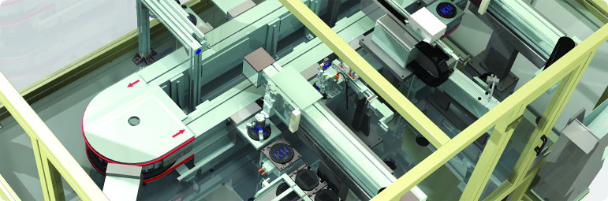

 |
Marin CNC sistem, cihaz, parça, modül ve birimlerin mekanik yapılarının tasarımı, çeşitli ortamlarda sınanması,üretime hazır hale getirilmesi için gerekli bilgi ve donanımın geliştirilmesi ve üretim bölümlerine aktarılması aşamalarınının gerektirdiği teknoloji ve bunları gerçekleştirecek olan imkan ve kabiliyetlere sahiptir. Bu imkan ve kabiliyetler sırasıyla; Gelişen iletişim araçları, yetenekleri arttığı halde fiyatları düşen bilgisayar destekli tasarım, mühendislik, imalat sistemleri, ekonomik dalgalanmalar, her geçen gün daha düşük maliyet daha kaliteli ürün daha hızlı üretim gerektiren rekabet koşulları, imalat sanayisinde yeni yapılanmaları gündeme getiriyor. Ana sanayiler salt imalatta değil tasarımda da her geçen gün yan sanayilere daha çok iş aktarıyor. Klasik imalatçı yan sanayiler bilgisayara dayalı imalat sistemlerine geçerken bir bölümü tasarıma da başlıyor Geriye Dönük Mühendislik Nedir? İleriye dönük mühendislik, klasik anlamdaki mühendislik süreçlerini kapsar. Bu süreç sistemin ya da ürünün zihinsel tasarımı ile başlar, sonra bu tasarım çeşitli işlemlerle hayata geçirilirilerek son noktaya getirilir. Bu işlemler teknik datalar, çizimler, malzeme bilgileri, model üretimi olabilir. Bazı durumlarda yukarıda sayılan süreçlerin bir kısmı eksik olabilir. Örneğin elde ürünün kendisi mevcutken bu üründen geliştirilecek üretim/çoğaltma işlemi için elzem olan teknik çizimi, bilgisayar modeli olmayabilir. Bu gibi durumlarda parçanın orijinalinden hareket ederek geriye gitme işlemi, süreci geriye yürütme işlemi yapılır. Ürünün başlangıç aşamasındaki CAD modeli, elde edilebilir. Bu işlemlerin bütününe “geriye dönük mühendislik” denir. GDM Uygulama Sebepleri 1.Üreticinin bir parçayı uzun zamandır üretmemesi ve tekrar üretmek istemesi 2.Orijinal tasarımının yetersiz döküman-tasyona sahip olması 3.Bir ürünün orijinal üreticisinin artık bulunmaması fakat müşterilerin bu ürüne ihtiyacının olması 4.Ürünün orjinal dökümantasyonunun kaybolması veya hiç varolmamış olması 5.Ürünün bazı kötü özelliklerinin yeniden tasarlanması ihtiyacı 7.Rakip ürünün iyi ve kötü özelliklerinin çözümlenmesi 8.Ürünün performansını ve özelliklerini geliştirmede sonuca götürecek yeni yolların keşfedilmesi 9.Rakip ürünlerin anlaşılması ve daha iyi ürünlerin geliştirilmesinde rekabete dayalı kıyaslama metodlarının elde edilmesi 10.Orjinal CAD modelinin değişikliklere ya da güncel üretim yöntemleri için yeterli olmaması 11.Orjinal üretici firmanın ek/yedek parçalar sağlamada yetersiz olması 12.Orjinal üretici firmanın parça sağlamada fahiş ücret talebi 13.Modası geçmiş parçaların ya da eski üretim işlemlerinin bugünkü ve daha ucuz teknolojilerle güncellenmesi
|